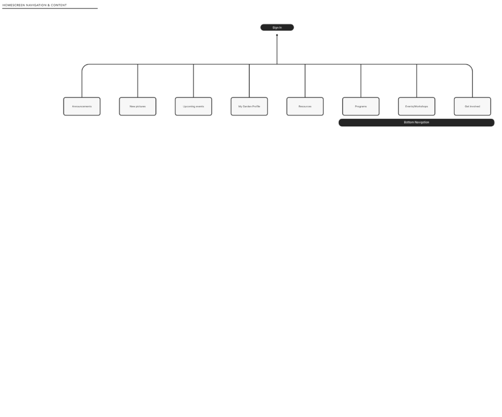

Learning By Creating
an urban gardening project
Urban agriculture is on the rise in Toronto as an effective and affordable mechanism to increase fruit and vegetable consumption and educate citizens on healthy food guidelines. Citizens are receptive to the idea of urban gardening but are often not equipped with the resources and connections to get one started.
could an online platform support citizens in learning and sustaining an urban garden within their property?
research
frankly, i wasn’t entirely sure if this was worth the endeavour.
About the hypothetical platform
What if there were already resources available? Can an online platform be created to foster the interest and growth of urban garden participants? What needs to be true for participants to join the online platform in the first place? In what ways could it increase interest? Would they trust Google over the platform for searching and learning about urban gardening? If they’re more comfortable with Google, what purpose does the platform have? Is an online platform the best way to reach the goal anyway?
About the citizens who’d use it
Who are the types of people interested in community gardens? What habits and lifestyles do they have? What challenges will they face in creating and sustaining a garden? What do they need to see first in order to stay engaged on the platform?
the answers to these questions starts by researching the users and their needs.
1. The “garden facilitator”
Wants: to set up and run one urban garden
Needs: guidance on paperwork to get approval from the City, support by the community
2. City of Toronto
Wants: Proof that the growth of UA is positive for the community
Needs: Records/tracking/paperwork of each urban garden
3. Residents
Wants: Information and accessibility to an urban garden
Needs: Education, guidance, support
I defined the relationship between the 3 players and sought to understand what each player would required in order to build a community garden.
...Grouping tasks as activities that required immediate response and interaction (YELLOW) and those that were time-consuming (GREEN).
…Ultimately coming to the conclusion that the platform should focus predominately on the residences, since the time-consuming tasks required changes in policy (updating community garden approval forms) or support beyond the scope of an online platform (direct help from others).
the people
They are diverse and range in age, sex, income, and technology know-how. I concluded this based on research from a variety of sources:
1. City of Toronto Food Strategy paper which illustrates income disparities in different communities
2. Toronto Urban Growers' interviews with the community which set to find indicators of what a successful urban garden looked like
3. Toronto newspaper articles defining the struggles and opportunities of urban gardening in the city
4. Websites like Greenest City, an urban garden with successful and active community engagement
residences have 4 major expectations from the platform
1. Accessible: the garden is an invitation to the whole community, including inexperienced users of technology
2. Engaging: ability to show and share active events, educational workshops, recent events, etc.
3. Resourceful: residences need easy access to resources on growing and maintaining an urban garden, and the ability to seek help
4. Visual: photos and videos displayed to present the success and engagement within a garden community
I created a chart of users and their level of familiarity, highlighting common tasks between all users.
The common tasks define the main features on the platform.
so... is an online platform the best way to reach the goal?
Yes and no.
Yes, an online platform can provide communication and engagement for community residences sharing an urban garden.
No, an online platform is not the ultimate solution to bring awareness and promote urban gardens.
the platform
platform needs to (in order of priority):
- communicate information and events
- learn about opportunities for engagement
- easy access to resources
I wanted the home screen to achieve all of these needs.
I played around with different layouts, envisioning the animation and general feel of the platform. I created a flowchart of all the information and how they would be placed. I focused on accessibility, referencing to WCAG (Web Content Accessibility Guidelines)'s 4 principles: perceivable, understandable, operable, robustness.
my rule: every element must serve a deliberate purpose.
A flowchart helps understand navigation and distribution of content. Because the interface's biggest priority is to showcase information and events, I created a home screen with the following content.

What order will users find the most benefit and engagement with the app?
1. Basic information and immediate access.
What's the name of my garden community? Where is my specific garden plot? Where can I donate to the community (a marketing strategy to encourage donations by seeing it first)
2. Space for the Garden Facilitator to share important information
Where can I hear from my Garden Facilitator or reach out to him/her?
3. Space to share upcoming event
What is the next most immediate thing I need to know?
4. Space to hear from everyone else in the community and connect with them
What's growing at my community garden? What are my fellow gardeners up to?
5. Resources
Resources are the least time-sensitive information so it is placed at the bottom. It's placed below the community garden pictures because seeing the pictures would hopefully inspire the user to want to grow a new plant (for example), and seek information on how to do it.
6. Bottom navigation
Easy access to popular or otherwise important information which requires more real estate.